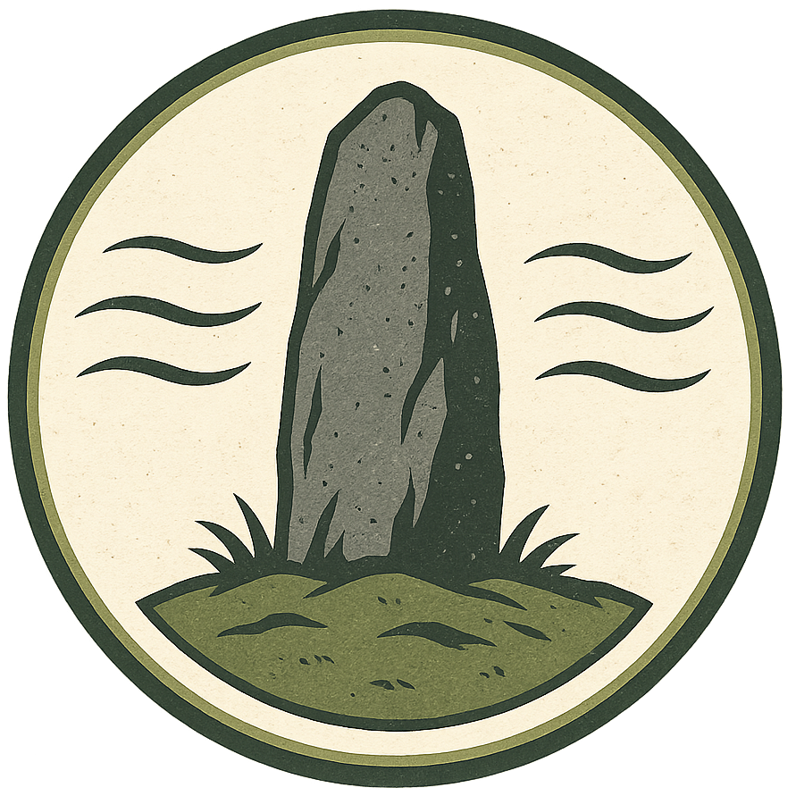

Ortsvorbereitung · Camruisge
Aberllan
Stadt und Verwaltungssitz der Nordseite Camruisges in der Grafschaft Celtigerns Wacht.
Verwaltung
- Lehenswart laut Quelle
- Lyonnel Garrael
- Obrigkeit
- Grafschaft Celtigerns Wacht
Häuser

Haus Garrael- Rang und Sitz
- Ritterhaus · Burg von Aberllan
- Gewerbe des Hauses
- Seefahrt
- Bürgerliche Häuser
- Offen
Aufgebot und Stadtwache
- Hausaufgebot
- Hausritter, Waffenknechte, Knappen und Pagen
- Stadtwache
- Wachposten der Stadt Aberllan
Stadt und Umland
- Burg von Aberllan
- Sitz des Hauses Garrael
- Nordseite Camruisges
- Höfe, kleinere Siedlungen und Minen im Gebiet der Garrael
- Einwohnerzahl, Einrichtungen und Garnisonsstärke
- Offen